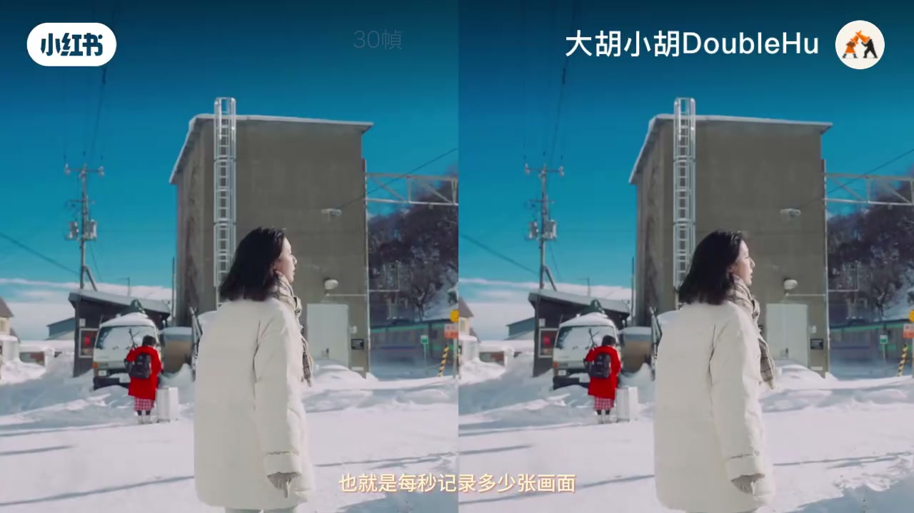
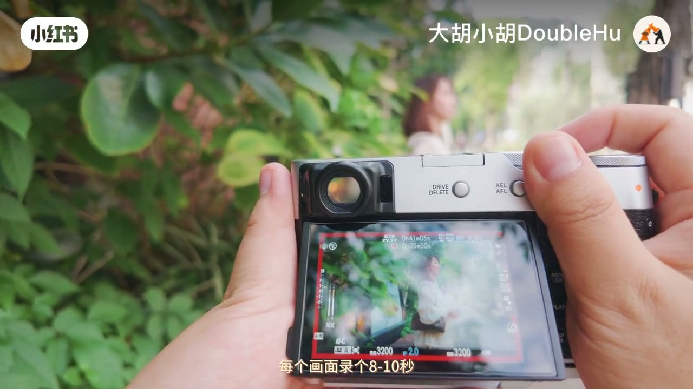
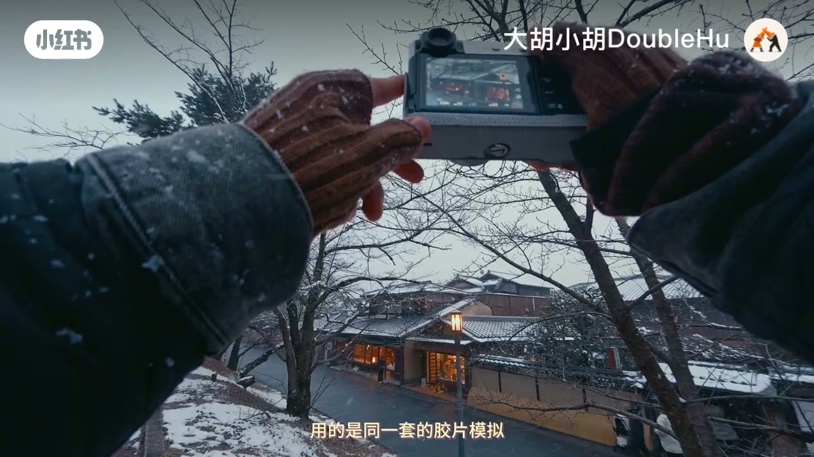
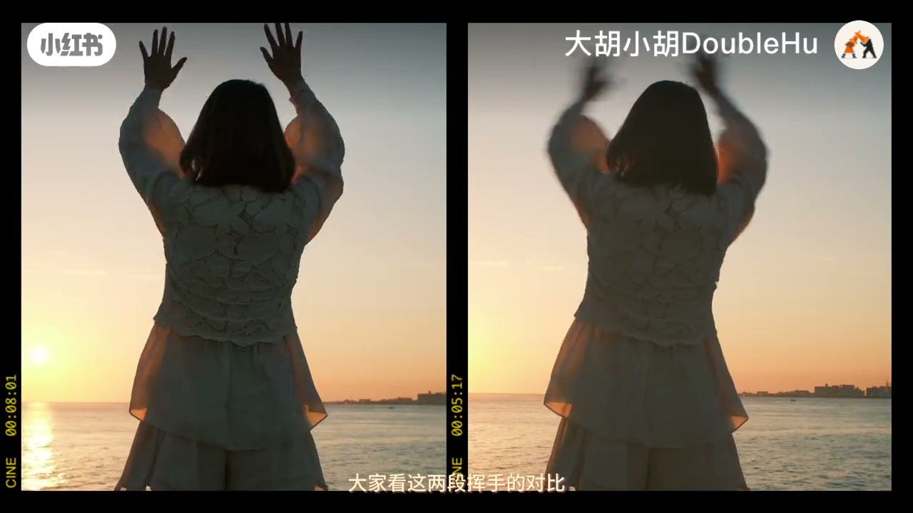
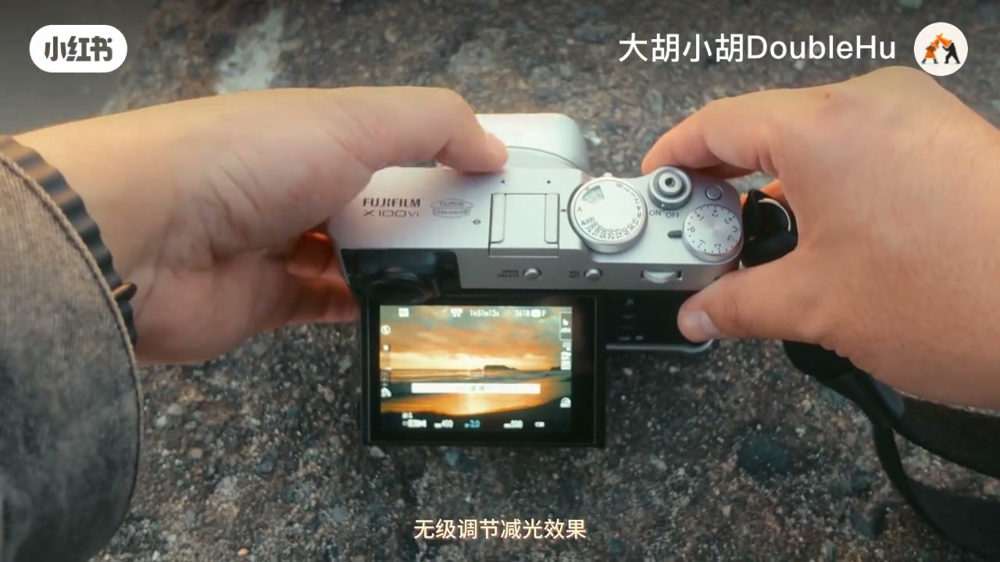
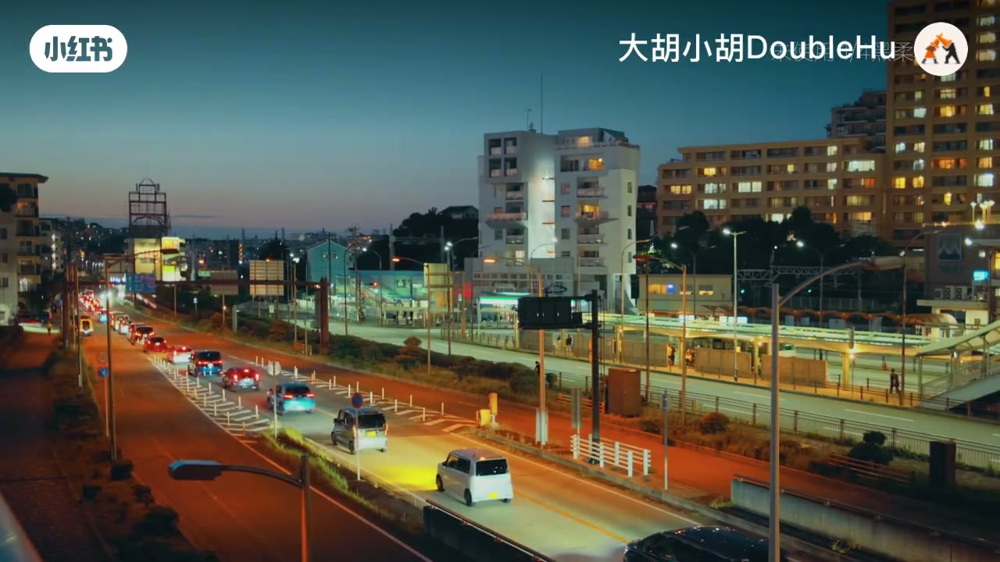
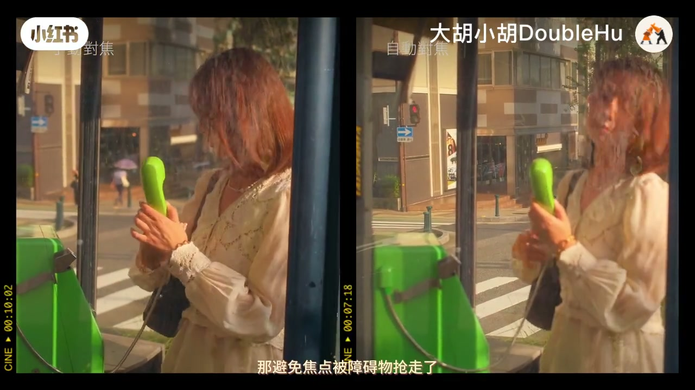

内容要点
账号「大胡小胡DoubleHu」用约十三分钟，把富士 X100VI（ASR 常误作「X160」）从「只会拍照」拉到「也能拍片」：先设录影规格（分辨率×帧率），再用自动模式养成随手记录；色彩靠胶片模拟直出，不对再查白平衡；运动质感靠约 1/60 快门，白天不够光就上 ND / 外接滤镜；最后讲清 M/C/S 对焦与「照片防抖≠影片边走边拍」。以下为作者观点纪实；幻觉重复段与听不清词已标出。
知识结构
日常优先普通 4K 保 35mm 视角；要细节用 4K HQ / 6.2K，接受约 1.23× 裁切到 ~43mm。
日常 4K30；升格用普通 4K60；HQ 与 6.2K 最高仅 30 帧。
自动模式处理曝光/白平衡；每镜 8–10 秒，先定机位再谈运镜。
胶片模拟够用，不必先上 Log；颜色偏了先调白平衡。
30 帧常配 1/60；要虚化又保快门，先降 ISO，再上内建/外接 ND。
JJC：可调 ND + CPL + 1/4 黑柔；暗光场景记得拆下。
抢焦切 M；距离变化用 C+人脸；影片不宜边走边拍，宜定机位慢摇。
默认配方：普通 4K30 + 胶片模拟 + 自动起步；要电影感再管 1/60 与 ND；移动跟拍请上稳定器，别指望机身影片防抖硬扛。
00:30–02:00录影规格：分辨率与裁切
开场先把机子切到录影模式，打开拍摄规格：左栏分辨率、右栏帧率。作者日常多用普通 4K——不裁切，等效仍约 35mm，文件也更省。
能拍 6.2K，但相对 4K 有约 1.23 倍裁切，视角从 35mm 收到约 43mm。要更细腻可选 4K HQ（超采样：读 6.2K 再缩成 4K，同样裁切）；后期还要放大就直接录 6.2K，视角与 HQ 相近但分辨率更高、重构图空间更大。
「日常拍摄为了保证视角足够广，我都会拍普通的4K。」
02:00–03:20帧率：日常30与升格60
作者通常用 30 帧做日常记录；要慢动作则切普通 4K 60 帧，放进 30 帧时间轴降到一半速。注意：6.2K 与 4K HQ 最高只有 30 帧，想 60 必须先回普通 4K。

约 02:34–02:52 ASR 出现「然后再按放慢」重复幻觉，及不明词「ADE13」；正文按前后文归纳为「日常 4K30，再按取景/升格需求切换」，不采信幻觉原文。
03:20–04:20自动模式与随手记录习惯
进入自动后，相机先帮你扛曝光与白平衡。作者建议从桌上咖啡、窗边光影这类简单画面开始：拿稳，每镜录 8–10 秒，别急着复杂运镜。
他反复强调：自动模式不等于不专业——最重要的是养成随手快速记录的习惯。

04:20–05:30胶片模拟与白平衡
很多人买富士就是冲着色调。作者建议直接套胶片模拟拍片，不必一上来研究 Log、LUT 与调色；拍照与拍片可用同一套模拟。审美是长期积累，后期以后再说也不迟。
有时眼前很暖、录下来却偏淡——这时查白平衡：它修正光线偏色。现场偏黄就补蓝，偏蓝就补黄；自动白平衡偶尔也会「不听话」（此后约有一分钟口播缺口/噪声，未强行补写）。

07:50–09:20快门抹糊与 ND
自动快门在白天大光圈时可能飙得很高。作者用海边挥手左右对比：快门太快，动作显生硬；稍慢则带运动抹糊，连起来更柔和。拍 30 帧时他常选 1/60 秒保留动态感。
若既要 F2 虚化又要钉死 1/60，白天必过曝：先把 ISO 降到允许最低；还亮就上 ND（镜头太阳镜）。X100VI 有内建 ND，但不可无极调节；作者另加 JJC 可调方案（下一节）。


09:00–10:50JJC 三合一滤镜
外接滤镜把 1–5 档可调 ND、CPL、1/4 黑柔合在一起：ND 丝滑减光；黑柔给高光柔扩散，人物与夜景灯光更有氛围；还能少换镜、保护前镜。光线很暗、不需要这些效果时，记得拆下来。

10:46–12:43对焦档位与影片防抖边界
树叶、栏杆等障碍物可能抢走焦点：主体距离大致不变时可切 M 手动钉死。C 连续追焦，S 单次对焦；开人脸识别时即便在 C，也会持续追人脸——距离一直在变的主体用 C 更合适。
照片防抖可以很强，但不等于影片动态防抖够用：即便开到最高，也不适合边走边拍。要跟拍请用云台/稳定器；作者更建议定机位或站定后慢摇，静态反而更有故事感。结尾作业：从家里一杯咖啡开始练。

「照片防抖强，不代表它拍影片时的动态防抖也强。」